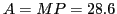
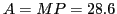

Next: Increasing and decreasing functions Up: Maxima, minima and inflection Previous: Maxima, minima and inflection Contents Index
A great many practical problems occur where we have to deal with functions of such a nature that they have a greatest (maximum) value or a least (minimum) value8.1and it is very important to know what particular value of the variable gives such a value of the function.
Inscribe any rectangle, as BCDE. Let ; then , and the area of the rectangle is evidently
(a) If the rectangle is carefully drawn, we may find quite accurately the area
of the rectangle corresponding to any value  by measuring
the length of the corresponding ordinate. Thus,
when
by measuring
the length of the corresponding ordinate. Thus,
when
 inches,
then
 square inches;
and when
inches,
then
sq. in. (found by measurement).
inches,
then
 square inches;
and when
inches,
then
sq. in. (found by measurement).
(b) There is one horizontal tangent (RS). The ordinate TH from its
point of contact T is greater than any other ordinate. Hence this
discovery: One of the inscribed rectangles has evidently a
greater area than any of the others. In other words, we may
infer from this that the function defined by has a maximum
value. We cannot find this value (= HT) exactly by measurement,
but it is very easy to find, using Calculus methods. We
observed that at T the tangent was horizontal; hence the
slope will be zero at that point (Example 6.1.1). To find the abscissa of T we then find the first
derivative of , place it equal to zero, and solve for  . Thus
. Thus
Let  denote the length of side of square base in feet,
and
denote the length of side of square base in feet,
and  denote the height of box.
Since the volume of the box is given,
denote the height of box.
Since the volume of the box is given,  may be found in terms of
may be found in terms of  . Thus
,
so
. Thus
,
so
 .
We may now express the number (=
.
We may now express the number (=  ) of square feet of lumber required
as a function of
) of square feet of lumber required
as a function of  as follows:
as follows:
What do we learn from the graph?
(a) If the box is carefully drawn, we may measure the ordinate corresponding to any length () of the side of the square base and so determine the number of square feet of lumber required.
(b) There is one horizontal tangent (RS). The ordinate from its
point of contact T is less than any other ordinate.
Hence this discovery: One of the boxes evidently takes less lumber
than any of the others. In other words, we may infer that the
function defined by has a minimum value. Let us find this
point on the graph exactly, using our Calculus. Differentiating  to get the slope at any point, we have
to get the slope at any point, we have
Substituting in  , we see that this is sq. ft.
, we see that this is sq. ft.
The fact that a least value of  exists is also shown by the
following reasoning. Let the base increase from a very small square to
a very large one. In the former case the height must be very great
and therefore the amount of lumber required will be large. In the
latter case, while the height is small, the base will take a
great deal of lumber. Hence
exists is also shown by the
following reasoning. Let the base increase from a very small square to
a very large one. In the former case the height must be very great
and therefore the amount of lumber required will be large. In the
latter case, while the height is small, the base will take a
great deal of lumber. Hence  varies from a large value, grows less,
then increases again to another large value. It follows, then,
that the graph must have a ``lowest'' point corresponding to the
dimensions which require the least amount of lumber, and therefore
would involve the least cost.
varies from a large value, grows less,
then increases again to another large value. It follows, then,
that the graph must have a ``lowest'' point corresponding to the
dimensions which require the least amount of lumber, and therefore
would involve the least cost.
Here is how to compute the critical points in SAGE:
[fontsize=\small,fontfamily=courier,fontshape=tt,frame=single,label=\sage]
sage: x = var("x")
sage: f = x^2 + 432/x
sage: solve(f.diff(x)==0,x)
[x == 3*sqrt(3)*I - 3, x == -3*sqrt(3)*I - 3, x == 6]
This says that
has three roots, but only one
real root - the one reported above at  .
.
We will now proceed to the treatment in detail of the subject of maxima and minima.
david joyner 2008-08-11